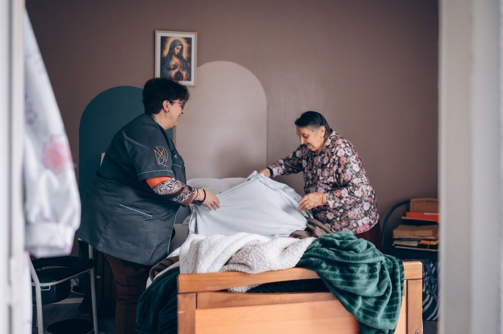
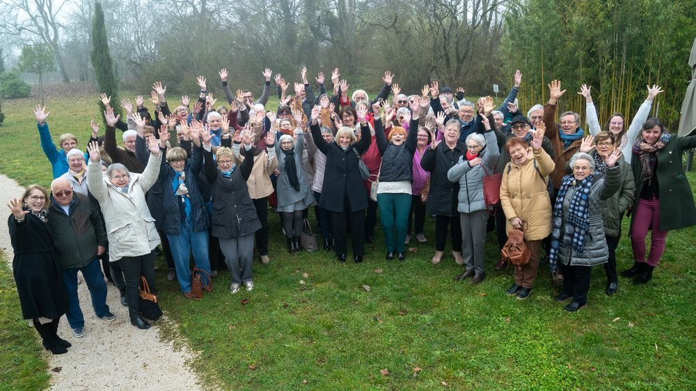
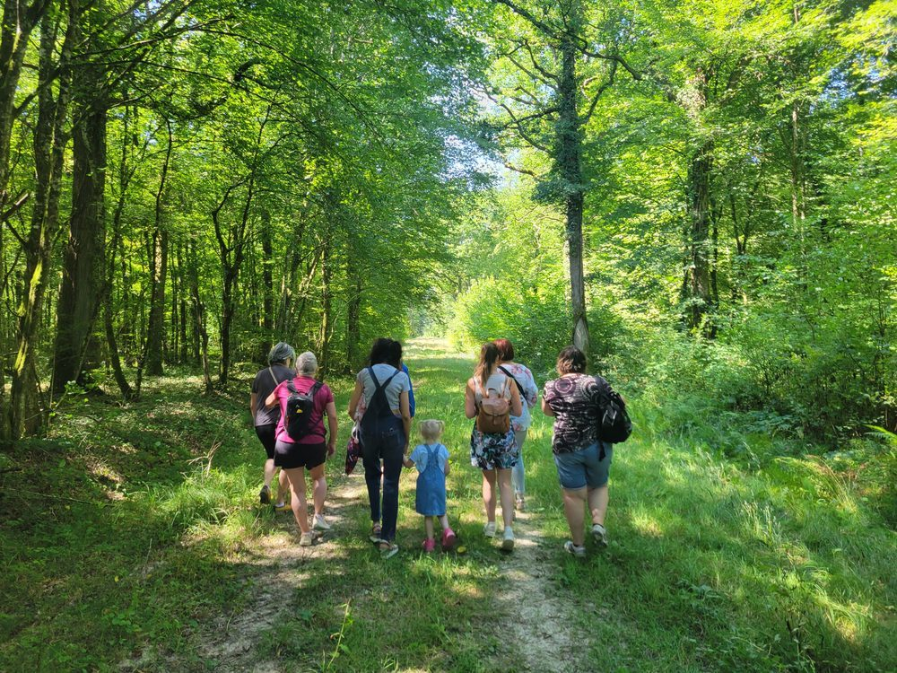

Je postule
Vous cherchez un emploi stable, humain et proche de chez vous ? On vous attend.
Postulez ici !Depuis 80 ans à vos côtés ♡
Un emploi qui a du sens, l'envie de donner un peu de votre temps, ou notre balade conviviale ? Choisissez votre chemin ci-dessous.

Vous cherchez un emploi stable, humain et proche de chez vous ? On vous attend.
Postulez ici !
Donnez du sens à votre temps libre. Quelques heures suffisent pour changer un quotidien.
Devenez bénévole
Samedi 26 septembre 2026 à Collonges-et-Premières. Marchez, partagez, éveillez vos 5 sens !
Informations & inscription